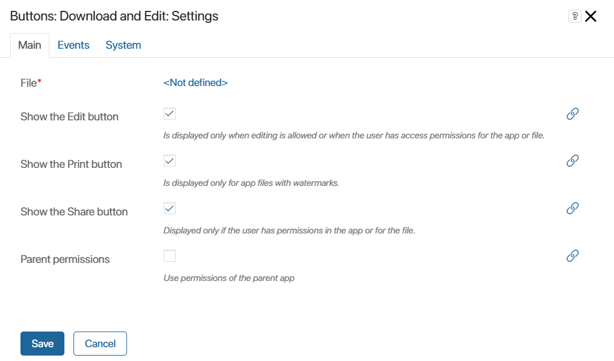

This widget allows you to edit and download files to your computer and print them from a page, a task page or an app item’s form.
It has the following buttons:
- Download. This button is placed on forms by default.
- Edit. Display on the object form is enabled in the widget settings. This button is only available for users with the Edit access permissions for files. It appears for file formats that support editing (.docx, .xlsx, .txt) if you have an integration with an online file editing service.
- Print. Display on the object form is enabled in the widget settings. This button is available if you have enabled the Print form option. It allows you to download and print a file with a watermark.
- Share. This button is displayed by default on the view and edit forms of the app item. It allows the you to copy the document link to the clipboard.
- Delete. This button is shown by default on the app item editing form. It allows you to replace the file contained in the item.
Widget settings
By default, the widget is added to the view form of Document-type apps as part of the Upload with preview file widget.
To place the widget on forms of other objects, drag it from the right panel of the interface designer to the modeling canvas, or click +Widget. To learn more, see Form templates.
Configure the settings in the provided window.
Main tab

- File*. Specify a context variable of Files type. Click the <Not defined> link and select the required value from the list.
- Show the Edit button. Enable the option to add the button to the object form. For example, display it on the app item edit form.
- Show the Print button. Check this option to make the button appear on the object form. If watermark printing is enabled in the app settings, the option in the widget is checked by default and the button is displayed on the view form.
- Show the Share button. Check this option to make the button appear on the form.
- Parent permissions. Check this option so that the permissions of the parent app are inherited if the widget is located inside of another widget.
Events and System tabs
These tabs are for system settings that are the same for all the widgets. They allow you to configure a widget’s visibility and access to its data, define what happens, when the user moves or hovers the pointer over the widget, etc. Find out more in System widget settings.
To complete the settings, click Save. To make the changes available to users, click Save and Publish in the top toolbar.
Found a typo? Select it and press Ctrl+Enter to send us feedback